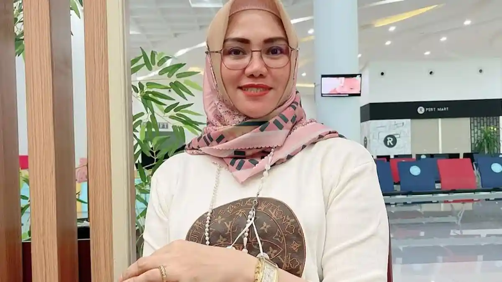
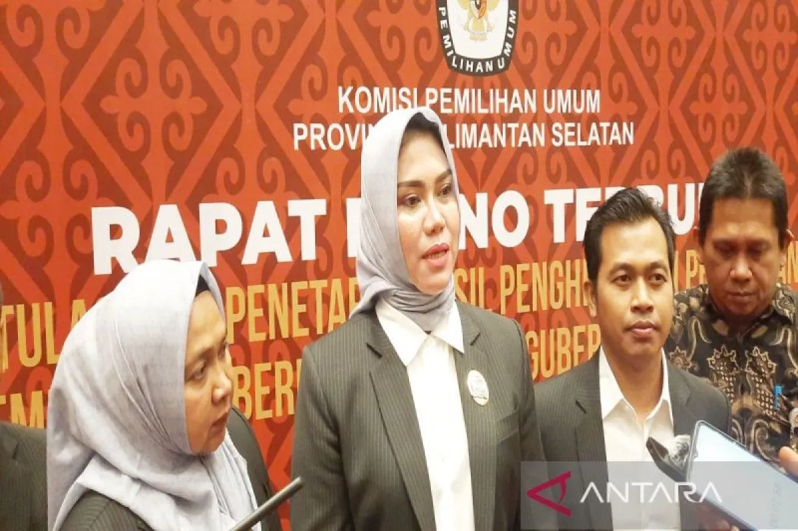

Akademik
Ilmu Politik
Program Doktor Ilmu Politik Universitas Indonesia, 2016.
Mengabdi untuk demokrasi dan pemilu yang berintegritas, inklusif, dan berkeadilan melalui kepemimpinan yang profesional, penguatan partisipasi masyarakat, serta komitmen pada kepentingan rakyat.

Lahir di Makassar, 21 Mei 1976. Memiliki latar pendidikan ilmu politik dan ilmu sosial, termasuk Program Doktor Ilmu Politik Universitas Indonesia pada 2016.
Program Doktor Ilmu Politik Universitas Indonesia, 2016.
Berkomitmen pada tata kelola pemilu yang profesional, transparan, dan berpihak kepada pemilih.
Mendorong literasi demokrasi dan keterlibatan warga dalam proses politik.
Keterlibatan sosial sebagai bagian dari kerja untuk masyarakat yang inklusif.
Apresiasi terhadap pengabdian akademik, kepemimpinan, dan kerja-kerja demokrasi.
Menghadirkan kepemimpinan yang berintegritas dan membuka ruang partisipasi yang setara.

Peran kerja keras dan kepemimpinan dalam menyelesaikan misi demokrasi.
Andi Tenri Sompa menyoroti objektivitas dan kinerja dalam forum akademik.
Perjalanan akademisi dalam penyelenggaraan pemilu tingkat provinsi.
Catatan partisipasi pemilih sebagai bagian dari penguatan demokrasi daerah.